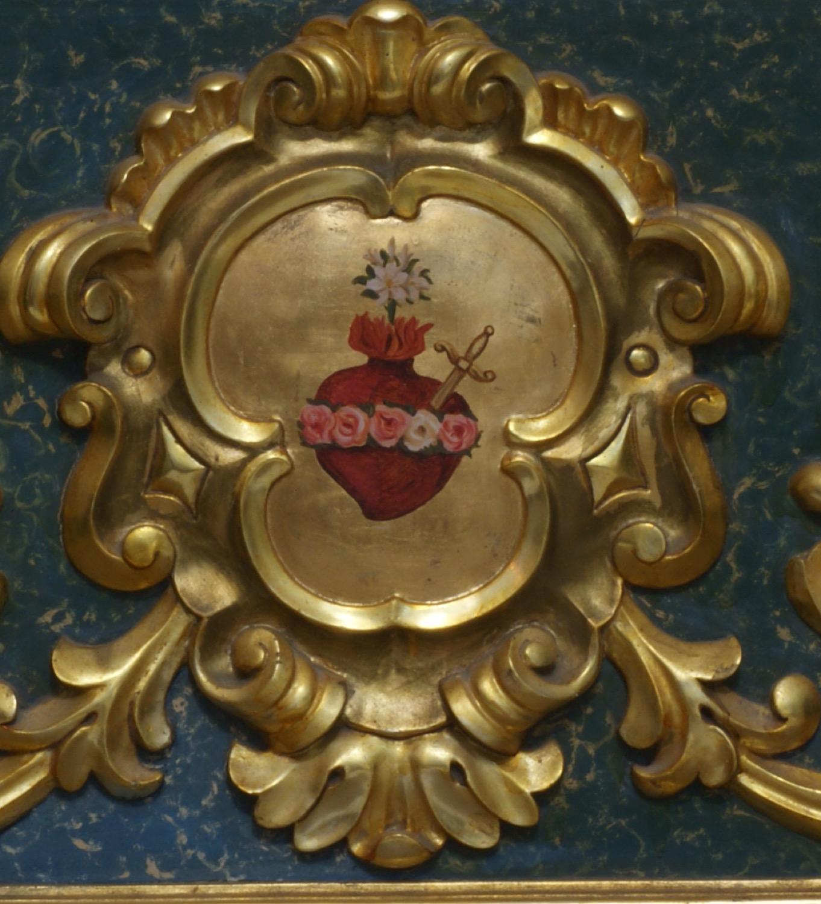

L’Immaculat Cor de Maria simbolitza l’amor de la Verge per Déu i per tota la humanitat. Aquí se'l representa amb els seus elements més característics: envoltat d’una corona de roses, en referència al rosari, que simbolitza la puresa i les virtuts de Maria; travessat per una espasa, que evoca els dolors que patí la Verge al peu de la creu, i coronat amb flames, que representen l’amor ardent de la Verge envers Déu i la humanitat. D’entre aquestes flames sorgeix un lliri blanc, símbol de la virginitat de Maria. El retaule del Sagrat Cor que conté aquest dibuix és de mitjan segle XX.